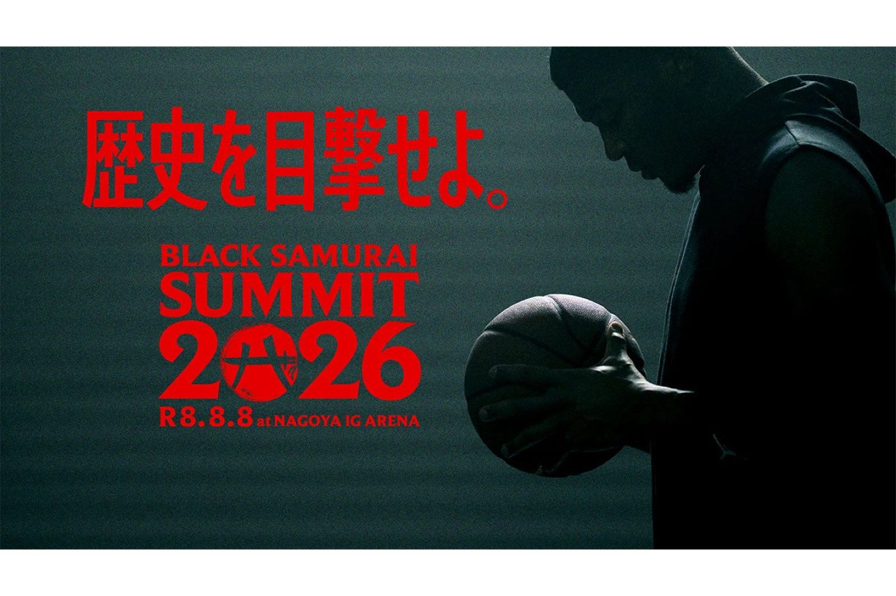

コートの熱を、写真に残す人を育てる —— キヤノンMJが八村塁主宰「BLACK SAMURAI 2026」に協賛
育てるのは、選手だけじゃない。キヤノンマーケティングジャパンが、八村塁氏主宰の次世代アスリート育成プロジェクト「BLACK SAMURAI 2026」に協賛すると7月22日に発表した。目玉は、若手スポーツフォトグラファー向けの特別プログラム。コートの内側で戦う人材と、その瞬間を写真で伝える人材——両方を同時に育てようという座組だ。

協賛するのは神戸と名古屋
「BLACK SAMURAI」は2025年から始まった、若い世代へ世界基準の挑戦環境を提供するプロジェクト。2026年は全国3地域で展開され、キヤノンMJはそのうち2つに協賛する。8月4日・5日に神戸のGLION ARENA KOBEで行われる「Daiichi Life Group PRESENTS BLACK SAMURAI KOBE CAMP」と、8月6日から8日に名古屋のIGアリーナで行われる「BLACK SAMURAI SUMMIT 2026」だ。
撮る側にも「世界基準」を
名古屋では、プロフォトグラファーによる講義と実践指導を受けながらトップレベルの競技を撮影できる、若手スポーツフォトグラファー育成プログラムを実施。参加者には、2026年9月に愛知・名古屋で開催される第20回アジア競技大会への参加機会も提供される。会場には遠隔操作カメラを設置し、複数視点からの撮影で国際大会水準の映像表現を支える。神戸では来場者向けのカメラ体験・プリント体験ブースも展開し、イベントの公式記録撮影にもプロが入る。
感動は、記録されて初めて残る
どんな名場面も、写真がなければいつか記憶から消えていく。八村塁が用意した挑戦の舞台を、次の世代のフォトグラファーが撮る。この夏の神戸と名古屋には、そういう二重の育成が仕込まれている。
出典: キヤノンマーケティングジャパン株式会社プレスリリース「スポーツの感動を伝える次世代人材を育成 八村塁氏主宰「BLACK SAMURAI 2026」に協賛し若手スポーツフォトグラファー向け特別プログラムを実施」（PR TIMES・2026年7月22日）
https://prtimes.jp/main/html/rd/p/000001439.000013943.html